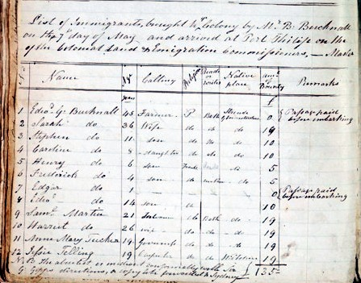
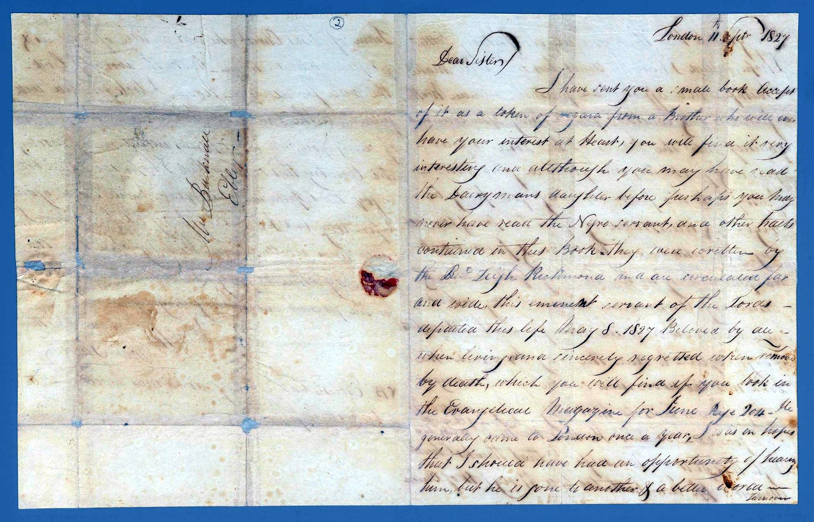
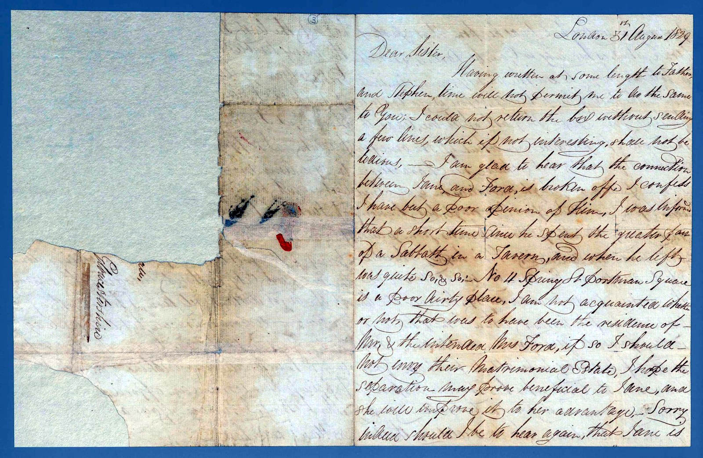
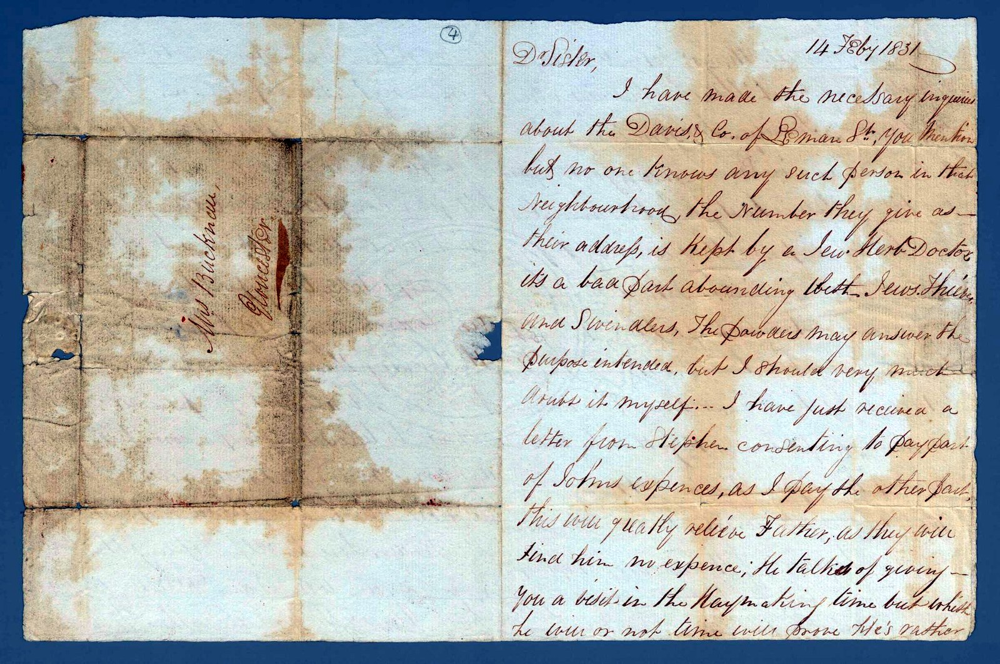
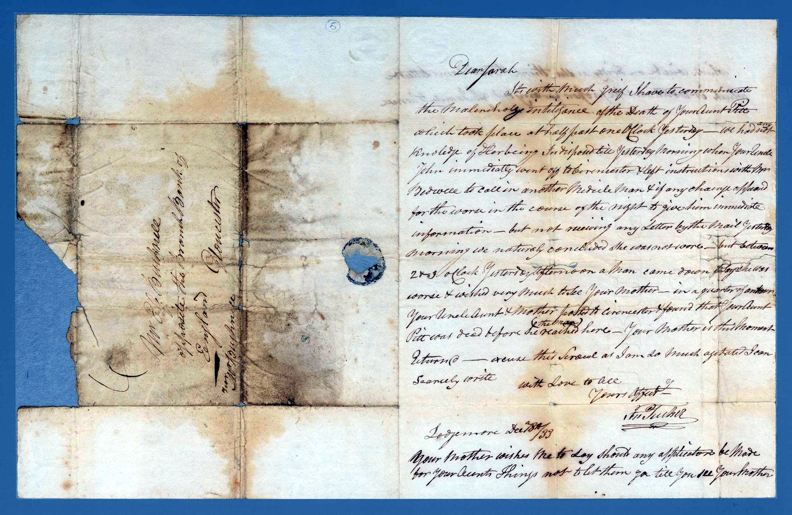
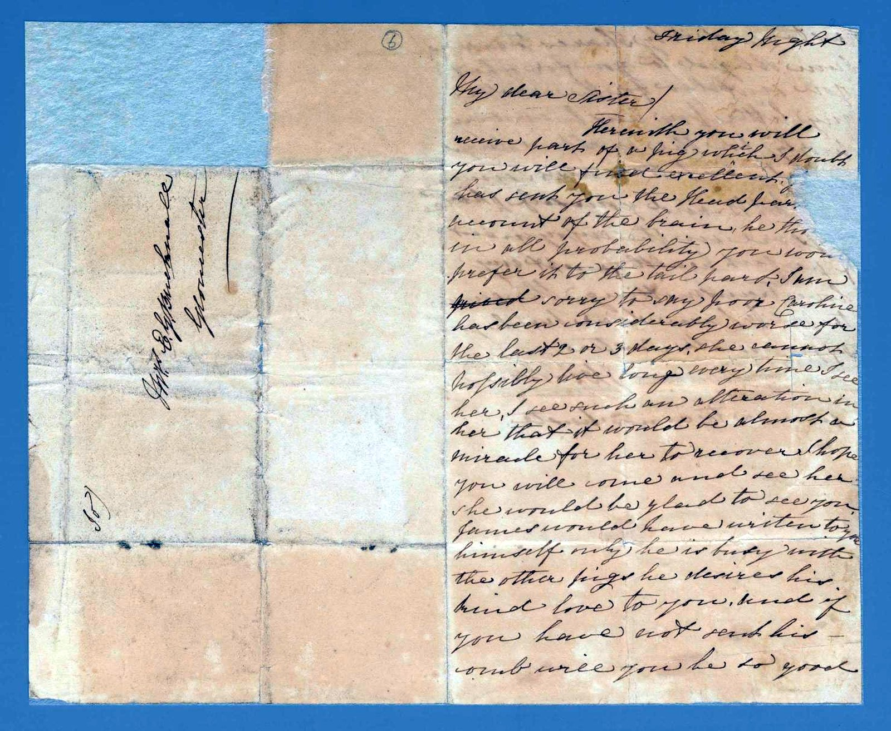
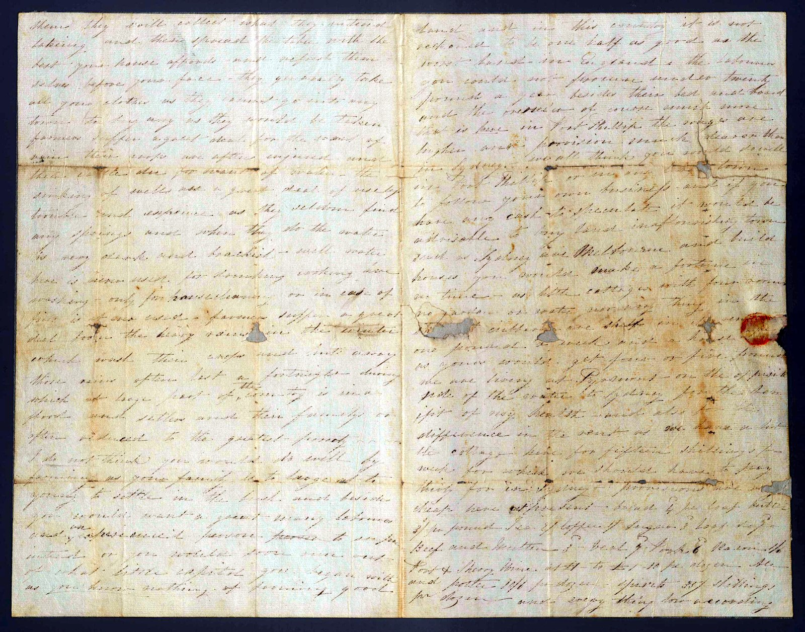

From the research behind the novel
The recovered letters
Just a few of the family's letters, each shown beside its transcription.
The family kept its letters for a hundred and fifty years — carried across oceans, folded into eighths, stained along every crease, the ink faded until it was nearly the colour of the paper.
Some could barely be read at all. Working line by line, we recovered what they say — and set each one beside its original, so you can see for yourself. This is where the novel came from.

Port Phillip · 1843
The ship's ledger
The colony wrote down everyone who came. Sarah is there — named, aged thirty-six — on a page that would later be forgotten.
Read the record →

London · c.1826–27
“An unhappy house”
Before Sarah married, her brother wrote home from a wretched London lodging — and sold his trousers to raise a little money.
Read the letter →

London · 1827
A book from a brother
A gift of religious tracts, and a tender letter of good wishes to a newly-married sister.
Read the letter →

London · 1829
A broken engagement
News of their sister Jane, freed from a man William could not abide — the letter itself half torn away.
Read the letter →

London · 1831
John lost in London
A boy newly apprenticed, unable to get over a city that is “nothing but houses if he walks for hours together.”
Read the letter →

Lodgemore · 1833
The death of Aunt Pitt
Written in grief and haste — and folded within it, letters that must not be seen by anyone outside the family.
Read the letter →

Undated · “Friday Night”
A pig, a cradle, a dying girl
Sarah's sister Jane sends part of a pig and dreadful news, the homely and the mortal in one breath.
Read the letter →

Parramatta · 1842
“Do not farm”
Written before they sailed, and faded almost to nothing: a warning not to go onto the land. They went, and they farmed.
Read the letter →
Each document is shown as its original photograph beside a transcription — the reading given plainly, with uncertain words marked honestly where the paper has defeated us.
Letter images reproduced from State Library Victoria; the ship's ledger from Public Record Office Victoria. Reproduced with permission and subject to each archive's conditions of use.